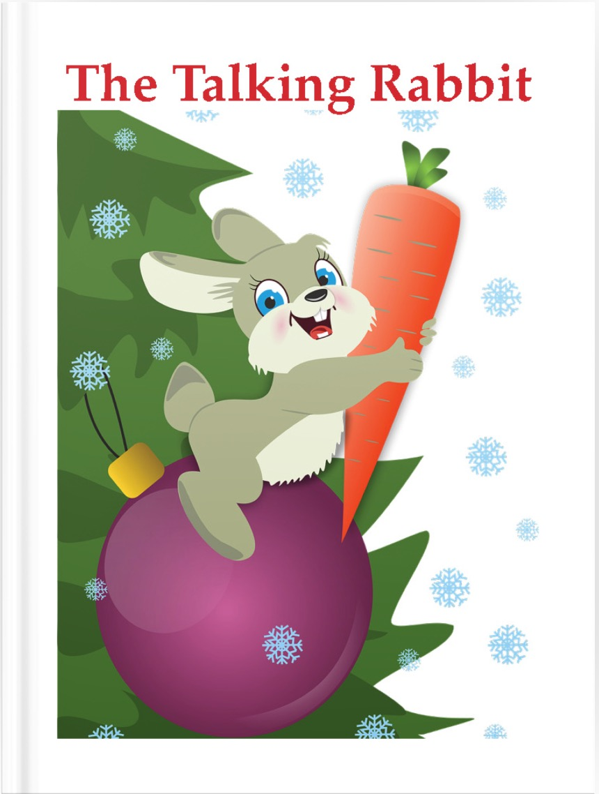
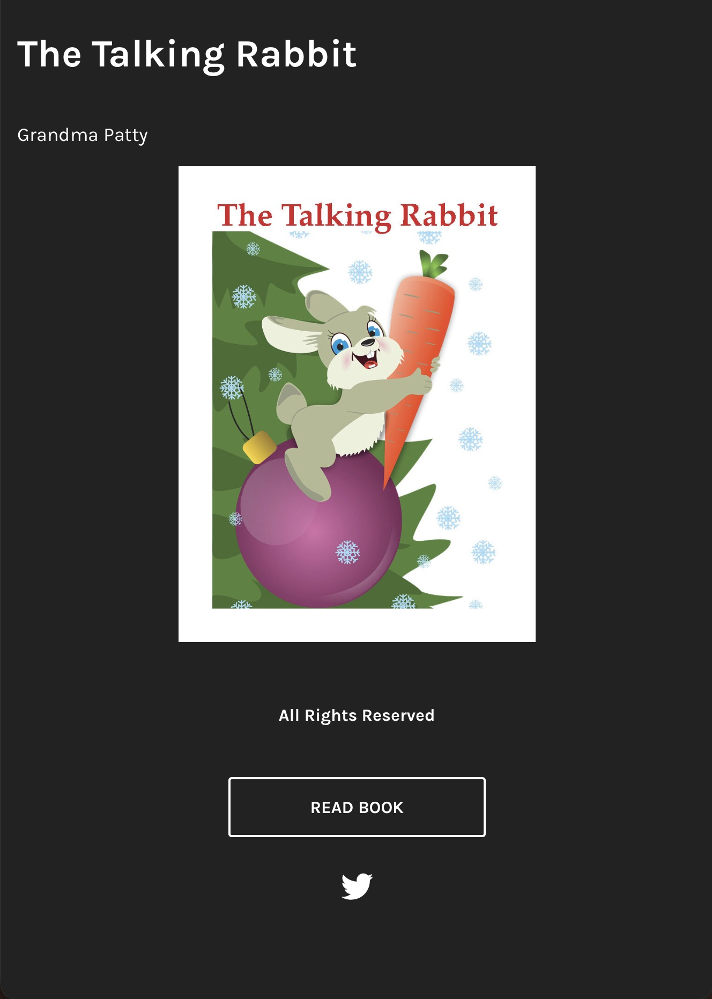
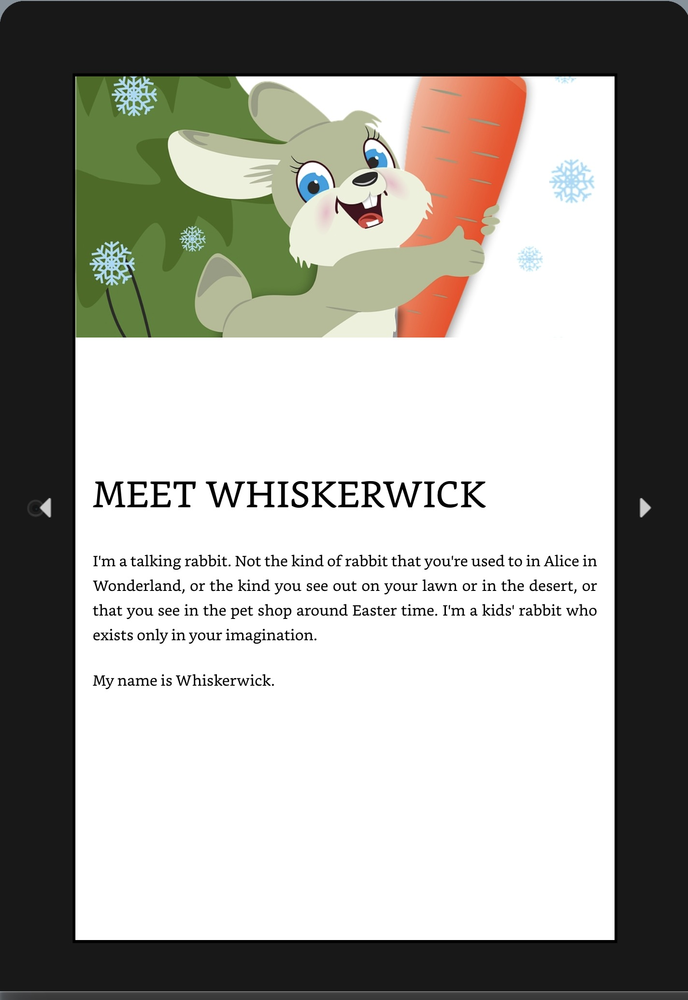

The thumbnails below link to three versions of eBooks:
• ePub from Adobe InDesign, readable with Apple Books on MacOS or iOS or with an ePub reader on Windows. (Download by clicking on the thumbnail image.)
• Pressbook created on pressbooks.com, click to read online.
• Amazon Kindle, click to download and read on a Kindle eReader.



Procedure for writing the eBooks. To provide content for this experiment, ChatGPT was asked to write a 1000-word story about a “talking rabbit,” similar to the one in Alice in Wonderland. The resulting text was formatted, along with two images of rabbits from the royalty-free site Pixabay, into the three versions of eBooks.